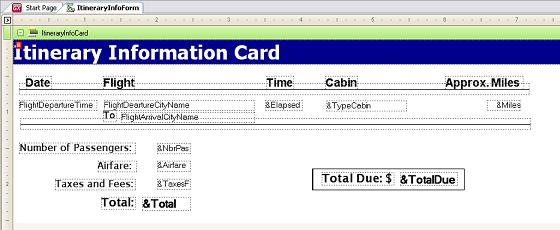

This command executes every command within the Do while, and the Enddo sentence until the condition cond becomes false. Any command can be specified within a Do while-EndDo group. To force an exit from the Do while group you may use the Exit command. SyntaxDo while cond Where: Code ExampleHow to print ten tickets on itinerary information: Source&i = 1 Do while &i <= 10 For each Where FlightNumber = &FlightNumber Print ItineraryInfoForm EndFor &i = &i + 1 EndDo Layout
ScopeObjects Procedures, Transactions, Web Panels See alsoFor To Step Command
|
| Backlinks | ||
| Code Snippets | Commands in Procedures | Commands in Transactions |
| Exit command | For In Array/Collection Command | How to define Variables and Arrays |